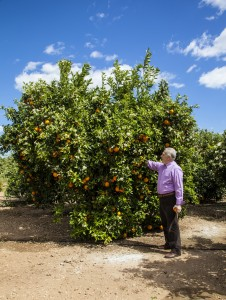

Uno de los factores que más influyen en el proceso de maduración de los cítricos es el clima. De él depende el tiempo que tardan en madurar las naranjas y la calidad de las mismas.
Aunque los cítricos no toleran las heladas, necesitan frío para madurar. Con el cambio climático, en Valencia estamos sufriendo temperaturas más altas y secas de lo habitual. Las naranjas tardan más en madurar y cada vez la temporada de recolección está empezando más tarde. Las variedades que deberían llegar en octubre están madurando a mediados de noviembre, las de enero llegan en marzo y en julio hemos llegado a ver naranjas en los árboles, cuando no es nada habitual.
Muchos de vosotros nos preguntabais a principio de temporada “¿todavía no hay naranjas? ¿cuándo empezáis?”, y cada vez os estáis dando cuenta de que las naranjas llegan más tarde, ¿os habéis parado a pensar que es consecuencia del cambio climático, que ya nos está afectando directamente?
Nunca imaginamos que la climatología sería tan importante para nosotros.
Como agricultores, amantes de la naturaleza y del medio ambiente, estamos muy concienciados con el cambio climático y los riesgos que conlleva, que además nos afecta de forma directa. Aunque la lluvia en nuestro día a día supone un inconveniente porque nos impide recolectar, sabemos que es imprescindible para mantener nuestro ecosistema, y por tanto nuestros campos.
Llevamos más de un año especialmente seco en Valencia y vivimos “pegados” a las predicciones meteorológicas y a las de mi padre, que como buen hombre del campo y conocedor de las señales de la naturaleza, sólo con ver la dirección del viento, las nubes, etc. sabe decirnos si va a llover y el tiempo que va a hacer en unos días.

Luis Serra revisando la floración de los naranjos en primavera.
¿Podemos hacer algo para frenar el cambio climático?
¿Por qué nos preocupa tanto que llueva en otoño o que haga frío en invierno cuando debería ser normal? ¿Qué podemos hacer para frenar el cambio climático? ¿Sabemos realmente los riesgos que conlleva y cómo puede afectarnos? Desde Greenpeace nos explican qué se está haciendo para frenar el cambio climático y cómo podemos poner nuestro granito de arena.
Desde aquí os animamos a que entre todos, hagamos lo que esté en nuestras manos para que nuestro ecosistema siga con vida, y para que los árboles y las plantas sigan floreciendo en primavera.


Gracias no solo por vuestros productos y la forma de cuidarlos sino por vuestra apuesta medioambiental colaborando con organizaciones como Greenpeace.
Una razon más, si cabe, para seguir adquiriendo vuestro-nuestro tesoro.Un abrazo
Hola Ion,
Muchas gracias por tu comentario, por valorar nuestro compromiso con el medio ambiente y por las palabras tan bonitas que dedicas a nuestros productos. Es un placer contar con clientes como vosotros. Un abrazo.